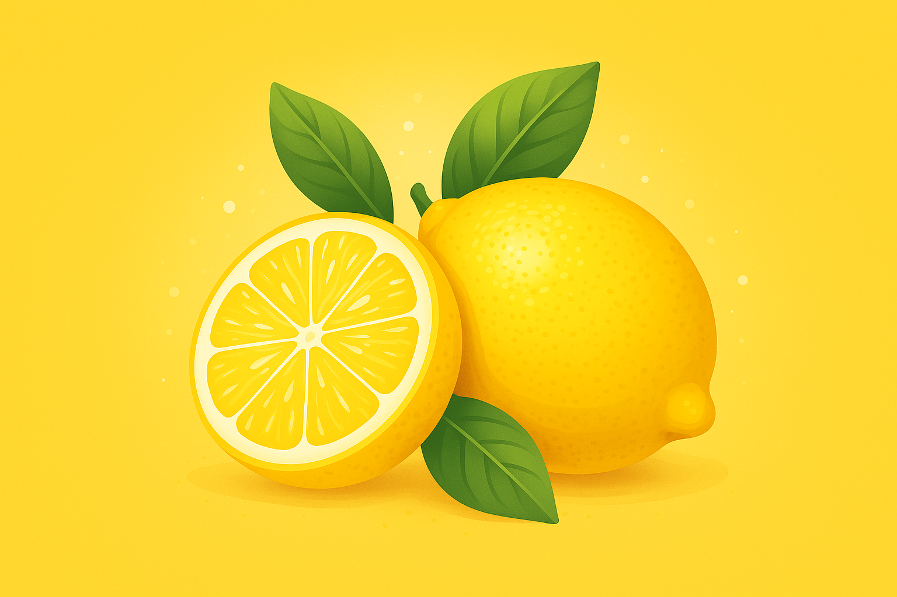

Organic Lemon Citric Acid is a naturally occurring compound derived from organically grown lemons. It belongs to the family of weak organic acids and is primarily known for its tangy flavor, acidic properties, and impressive health-enhancing capabilities. Unlike synthetic versions, organic citric acid is extracted through eco-friendly fermentation or cold-pressed methods that preserve its purity and nutritional value. It’s commonly used in health supplements, skincare products, natural cleaning solutions, and even food preservation.

Organic Lemon Citric Acid is a natural compound sourced from organically grown lemons. It’s valued for its bright taste, acidic properties, and versatile wellness applications. Extracted via fermentation or cold-pressing methods, it’s widely used in supplements, skincare, cleaning products, and food preservation.
Citric acid works on multiple levels:
Studies show that lemon-derived citric acid helps prevent kidney stone formation, enhances iron absorption, and fuels metabolic energy processes. It’s a key player in nutritional and detox science.
Our Probiotic Nutritional Drinks pair high-potency actives with targeted probiotic cofactors, each proven to support lipid metabolism, gut balance, inflammation control, and bone health.
Mechanism: Blocks HMG-CoA reductase to curb endogenous cholesterol synthesis.
Literature Support: Journal of Agricultural and Food Chemistry, 2021.
Mechanism: Acts as prebiotics to boost Bifidobacterium growth, enhancing gut flora balance.
Literature Support: Food Research International, 2020 (Bifidogenic index ↑ 2.1×).
Anti-Inflammatory: Vitamin D upregulates VDR receptors and Vitamin K activates Matrix Gla protein, jointly inhibiting vascular calcification.
Bone Health: Vitamin D enhances calcium absorption while Vitamin K activates osteocalcin, increasing bone density by 6.8%.
Literature Support: J Steroid Biochem Mol Biol, 2020; Osteoporos Int, 2019.
Potent inhibition of cholesterol synthesis supports healthy lipid profiles.
Prebiotic SCFOS fosters beneficial bifidobacterial growth for digestive health.
Vitamin D + K synergy suppresses inflammatory markers and vascular calcification.
Enhanced calcium uptake and osteocalcin activation boost bone density and resilience.
Our Probiotic Nutritional Drink delivers precision-blended actives and prebiotic cofactors to nourish your gut–body axis. Every sip supports lipid metabolism, digestive balance, immune resilience, and skeletal strength for whole-body wellness.